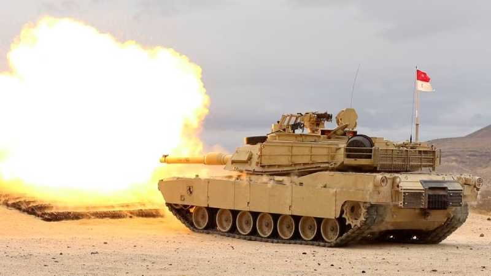

US joins Germany in sending battle tanks to Ukraine
By Gareth Evans- BBC News
January 25, 2023
The US will send 31 powerful battle tanks to Ukraine, joining Germany in sending the vehicles to support the fight against Russia's invasion.
The decision to deliver the M1 Abrams tanks was announced just hours after Germany said it would send 14 of its Leopard 2 tanks to the battlefield. Berlin also cleared the way for other European countries to send German-made tanks from their own stocks.
Ukraine has lobbied Western allies to send the military equipment for months.
It hailed the twin announcements as a turning point that would allow its military to regain momentum and take back occupied territory almost a year after Moscow invaded. It also said the tanks could help deter a potential Russian offensive in the spring.
"An important step on the path to victory," Ukraine's President Volodymyr Zelensky said. "Today the free world is united as never before for a common goal - liberation of Ukraine."
Russia, meanwhile, condemned the moves as a "blatant provocation" and said any supplied tanks would be destroyed. "These tanks burn like all the rest. They are just very expensive," President Vladimir Putin's spokesman said.
"Putin expected Europe and the United States to weaken our resolve," President Joe Biden said while announcing the decision at the White House on Wednesday. "He was wrong from the beginning and he continues to be wrong."
"We're also giving Ukraine the parts and equipment necessary to effectively sustain these tanks in battle," he said. "This is about helping Ukraine defend and protect Ukrainian land. It is not an offensive threat to Russia."
A Ukrainian tank battalion typically consists of 31 tanks, which is why that number has been agreed upon, Mr Biden said. The US decision, however, marks a reversal in their position as the Biden administration has insisted for some time that the heavy M1 Abrams tanks would be difficult to deliver, expensive to maintain and challenging for Ukrainian troops to operate.